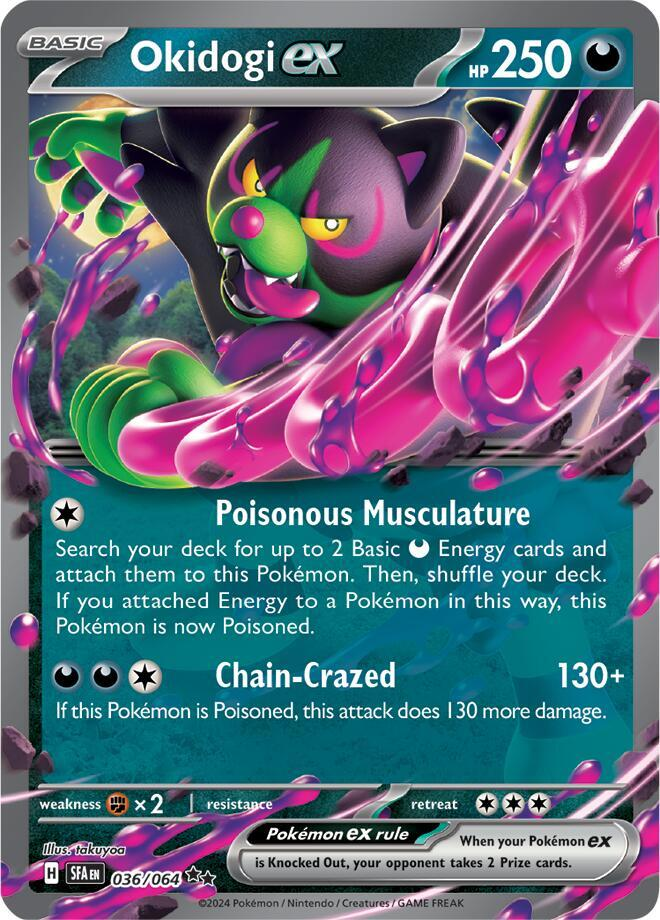
x3 x4
x4 x2
x2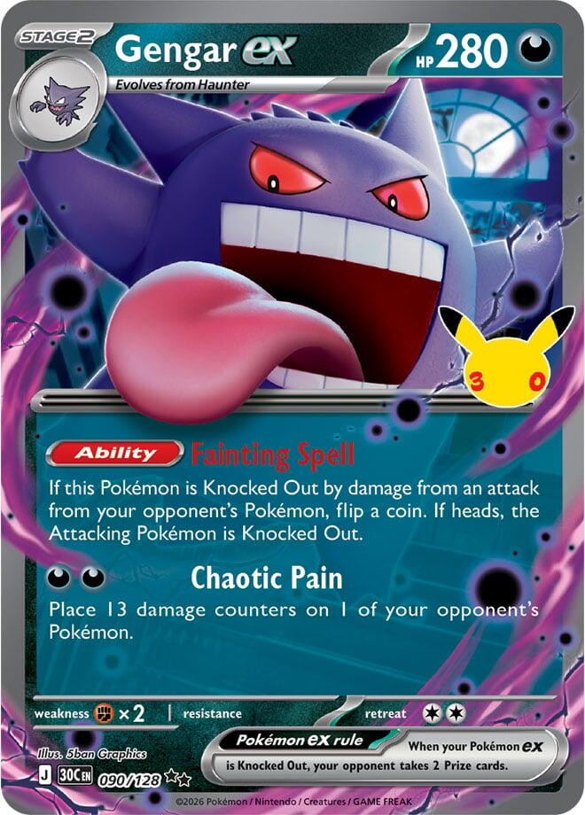
x3 x2
x2 x4
x4 x2
x2 x3
x3 x2
x2 x2
x2 x2
x2 x2
x2
![Boss's Orders [Ghetsis]](./assets/654453_bosss-orders-ghetsis.jpg) x2
x2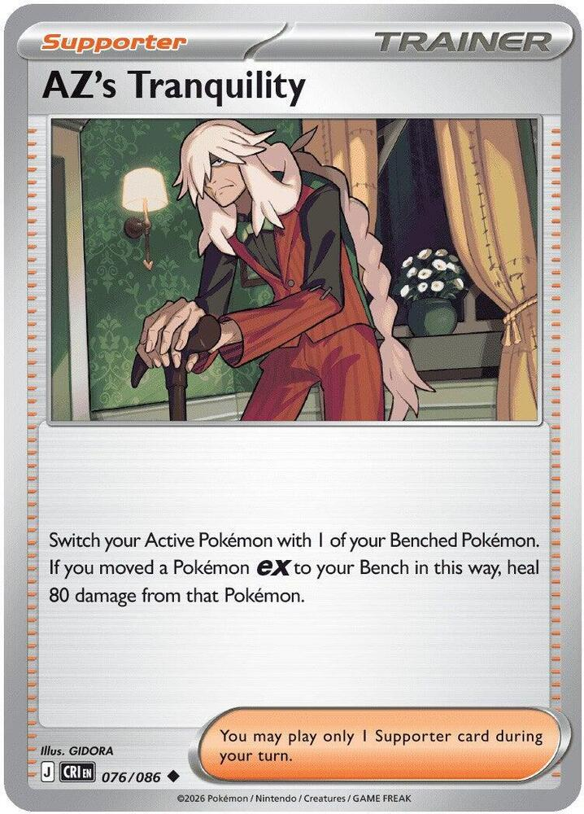
 x4
x4 x2
x2 x2
x2 x2
x2 x2
x2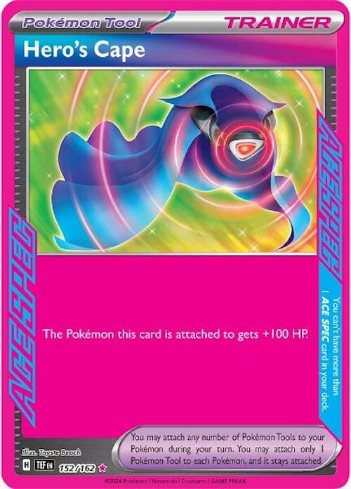
 x2
x2 x10
x10 Gengar Gang: Dead on Arrival
Gengar Gang: Dead on Arrival 
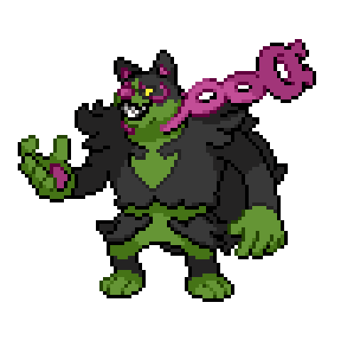
Every Mega in the format stands on a body that one Chaotic Pain kills
← back to all decks
The format runs on Mega Evolution Pokémon ex. They carry 330 to 380 HP, they hit for 270 and up, and nothing in this deck wins a straight damage race against one. The deck does not try. It kills them before they exist.
Chaotic Pain costs  and places 13 damage counters on 1 of your opponent's Pokémon. Any Pokémon, Active or Benched, your choice. Placing counters is not dealing damage, and most of what matters about this card follows from that one distinction.
and places 13 damage counters on 1 of your opponent's Pokémon. Any Pokémon, Active or Benched, your choice. Placing counters is not dealing damage, and most of what matters about this card follows from that one distinction.
Almost every Mega grows out of something, and 130 kills nearly all of those somethings.
| Their Mega | Grows from | HP | One Chaotic Pain |
|---|---|---|---|
| Mega Lucario ex | Riolu | 80 | ✓ |
| Mega Excadrill ex | Drilbur | 70 | ✓ |
| Mega Starmie ex | Staryu | 70 | ✓ |
| Mega Greninja ex | Froakie, Frogadier | 70, 100 | ✓ |
| Mega Charizard X ex | Charmander | 80 | ✓ |
| Mega Venusaur ex | Bulbasaur, Ivysaur | 80, 110 | ✓ |
| Mega Gardevoir ex | Ralts, Kirlia | 70, 100 | ✓ |
| Mega Chandelure ex | Litwick, Lampent | 70, 90 | ✓ |
| Dragapult ex | Dreepy, Drakloak | 70, 90 | ✓ |
| Beedrill ex | Weedle, Kakuna | 50, 80 | ✓ |
A few Megas grow from nothing. Mega Zygarde ex, Mega Floette ex, and Mega Kangaskhan ex are Basics, and those rooms are won by the Prize tax, not the snipe.
The thesis has limits, and they are arithmetic. One Pain a turn can't keep up with a deck that benches four cradles on turn 1 and searches two more every turn, which is Mega Excadrill. Going second, it can't reach a Stage 1 Mega that evolves on the opponent's second turn, which is Mega Starmie and Mega Lucario. And it finds nothing to shoot when Forest of Vitality takes Weedle all the way to Beedrill ex on the turn it lands. Versus the Card Shop has the plan for each.
Very little stops the counters. Damage prevention in this format is worded as damage, and counters walk through it. The Tera rule on Dragapult ex's Bench, Cornerstone Mask Ogerpon ex, Crustle's Mysterious Rock Inn, Neutralization Zone, and Full Metal Lab all miss. Four things do stop them, and each has a way around:
| Stops Chaotic Pain | How | Around it |
|---|---|---|
| Hide 'n' Sneak on Poltchageist, Sinistcha, and Banette | prevents every effect of your attacks on that Pokémon, and placing counters is an effect | attack damage is not an effect, so the dogs and Void Gale get through |
| Rocky Fighting Energy | the same, on the Fighting Pokémon it is attached to | shoot something else; Mega Zygarde and Cynthia's Garchomp carry it, and Draconic Buster discards Garchomp's own |
| Mist Energy | the same, on any Pokémon it is attached to | Crustle and Mega Kangaskhan carry it; Crustle's Rock Inn stops only Pokémon ex, so Toxtricity and Haunter still hit it |
| Battle Cage | no counters on their Benched Pokémon | Risky Ruins replaces it, or Boss's Orders drags the target up |
The other half of the deck is the price of dying. Shadowy Concealment takes a Prize off every Knock Out an opposing Pokémon ex scores on your Darkness Pokémon, and Fainting Spell flips a coin at whatever kills a Gengar ex. Between them, your losses cost one Prize while theirs cost two or three.
| Attacker | Cost | Output | Prizes it gives up |
|---|---|---|---|
| Gengar ex, Chaotic Pain | | 130 as counters, any target | 1 |
| Mega Gengar ex, Void Gale | | 230, and 460 into Darkness Weakness | 2 |
| Okidogi ex, Chain-Crazed |  | 260 while Poisoned, 520 into Darkness Weakness | 1 |
The Prize column assumes Mega Gengar is on your Bench and their attacker is a Pokémon ex. Against a single-Prize attacker, or counters moved by an Ability, add one to every row.
Six cards out and six in, against the list this page carried before September 24. Every swap answers something the Live games showed.
| Out | In | Why |
|---|---|---|
| 1 Haunter (3 → 2) | 1 Toxel (3 → 4) | An 11th Basic. Lone-Pokémon openings lost more Live games than any single matchup. |
| 1 Dawn (3 → 2) | 1 Grimsley's Move | Puts Mega Gengar, Toxtricity, or a Gengar ex straight onto the Bench from turn 2, with no Gastly and no Candy spent. |
| 1 Janine's Secret Art (2 → 1) | 1 Grimsley's Move | One Janine's covers the dog's re-Poison. |
| 1 Night Stretcher | 1 Poke Pad | A turn-1 Item that finds Gastly or Toxel, and Haunter or Toxtricity later. |
| 1 Energy Switch | 1 Poke Pad | Same job. Janine's already tops up an Active Gengar, which was Energy Switch's other use. |
| 1 Switch (3 → 2) | 1 Boss's Orders (1 → 2) | Munkidori is weak to Darkness, so dragging one up lets any real attack kill it. |
What it bought, and what it cost. An opener simulator played 60,000 games per list, going first and going second, with a simple pilot that never holds cards and never plays around anything. Trust the gaps between the columns, not the raw numbers.
| Old list | This list | |
|---|---|---|
| Basics, and the mulligan rate | 10, 26% | 11, 22% |
| Bench still empty after your first turn (going first / second) | 34% / 10% | 22% / 6% |
| Mega Gengar in play by turn 4 | 4% / 6% | 10% / 11% |
| Any attacker swinging by turn 3 | 58% / 64% | 54% / 58% |
| Gengar ex attacking by turn 5 | 64% / 65% | 60% / 60% |
This list is a few points slower to its first attack. In exchange it mostly stops the loss that kept happening on Live, where one Basic with nothing benched dies before your second turn, and it gets the Mega down more than twice as often by turn 4. Shadowy Concealment decided more of the Live games than any single attack did. If the first attack keeps arriving late, Test and Tune has the first fix, which is the second Janine's.

x3x4x2
x3x2x4x2x3x2x2x2x2x2
x4x2x2x2x2
x2x10Pokémon (20)
| Qty | Card | Set | Number | Reg |
|---|---|---|---|---|
| 3 | Okidogi ex | Shrouded Fable | 036 | H |
| 4 | Gastly | Perfect Order | 048 | J |
| 2 | Haunter | Phantasmal Flames | 055 | I |
| 3 | Gengar ex | 30th Celebration | 090 | J |
| 2 | Mega Gengar ex | Phantasmal Flames | 056 | I |
| 4 | Toxel | Phantasmal Flames | 067 | I |
| 2 | Toxtricity | Phantasmal Flames | 068 | I |
Trainers (30)
| Qty | Card | Type | Set | Number | Reg |
|---|---|---|---|---|---|
| 3 | Lillie's Determination | Supporter | Mega Evolution | 119 | I |
| 2 | Grimsley's Move | Supporter | Phantasmal Flames | 090 | I |
| 2 | Dawn | Supporter | Phantasmal Flames | 087 | I |
| 2 | Hilda | Supporter | White Flare | 084 | I |
| 2 | Team Rocket's Petrel | Supporter | Destined Rivals | 176 | I |
| 1 | Janine's Secret Art | Supporter | Shrouded Fable | 059 | H |
| 2 | Boss's Orders | Supporter | Mega Evolution | 114 | I |
| 1 | AZ's Tranquility | Supporter | Chaos Rising | 076 | J |
| 4 | Rare Candy | Item | Mega Evolution | 125 | I |
| 2 | Buddy-Buddy Poffin | Item | Temporal Forces | 144 | H |
| 2 | Poke Pad | Item | Perfect Order | 081 | J |
| 2 | Switch | Item | Mega Evolution | 130 | I |
| 2 | Energy Recycler | Item | Destined Rivals | 164 | I |
| 1 | Hero's Cape | Tool | Temporal Forces | 152 | H |
| 2 | Risky Ruins | Stadium | Mega Evolution | 127 | I |
Energy (10)
| Qty | Card | Set | Number | Reg |
|---|---|---|---|---|
| 10 | Basic Darkness Energy | Mega Evolution Energies | 007 | - |
20 + 30 + 10 = 60. ✓ Eleven Basics, fifteen Supporters, one ACE SPEC, and nothing over four copies.
Eleven Basics is a 22% mulligan, down from 26%. The opening seven holds an Okidogi 32% of the time, and a dog with an Energy 22% of the time. It holds at least one Gastly 40% of the time. About a quarter of opening hands (26%) hold no Energy at all, which is what Hilda, Poisonous Musculature, and Janine's are for. Poffin and Poke Pad find all eight small Basics; the dogs come from Call for Family, Dawn, and Grimsley's.
Every Live loss with this deck traces back to one of these. Each has a number behind it. The card sections below explain the cards; this section explains the decisions.
| They attack with | Build first | Why |
|---|---|---|
| Pokémon ex and Megas | Mega Gengar ex, parked on the Bench | Shadowy Concealment takes a Prize off every Knock Out their ex scores. Against Mega Zygarde it would have turned their 6 Prizes into 2. |
| Mega Lucario ex, with three Boss's Orders | Gengar ex, under the Cape | Mega Brave kills anything, and a parked Mega is 2 Prizes they can drag up and take. The Mega comes only when Haunter hands it over free. |
| Cynthia's Garchomp ex | Mega Gengar ex, parked, but the Cape goes on the Pokémon in front | Concealment still pays against an ex attacker. Draconic Buster does 640 to a Mega either way, so the Cape goes on a body it can save. |
| Single-Prize attackers | Gengar ex and the dogs, never the Mega | Concealment never applies, so the Mega is 3 Prizes for nothing. One dragged-up Mega lost the Dhelmise game. |
| Munkidori on their Bench | Gengar ex first | Moved counters skip Concealment and Fainting Spell, and Chaotic Pain is what kills Munkidori. |
Four more rules sit under the table:
.| Order | Targets | Why |
|---|---|---|
| 1 | Munkidori (110), Froslass (90) | They move or place counters, which switches off Concealment and Fainting Spell and undoes damage you already dealt. |
| 2 | The Basic or Stage 1 their Mega grows from | A Mega they can't deploy is three Prizes stuck in their hand. The table in The Thesis has every one. |
| 3 | Draw, search, and Energy engines: Lunatone (110), Dunsparce (60 or 70), Metang (100), Kadabra (80), Cynthia's Gabite (100) | Cut the fuel and their big attacker arrives late or not at all. |
| 4 | Eevee, before it becomes Espeon | Miraculous Shine devolves every evolved Pokémon you have. |
| Your Pokémon | Their next hit | Do this |
|---|---|---|
| A damaged Gengar ex | kills it, and their attacker is a Pokémon ex | Stand and die. With the Mega down it costs 1 Prize, and Fainting Spell flips at something worth 2 or 3. |
| Gengar ex under the Cape | leaves it alive | Attack, take the hit, then AZ's it home for 80 with the Cape still on. |
| A damaged Gengar ex | any hit from a single-Prize attacker | AZ's it, if 80 keeps it alive. The coin is only for 1 Prize and Concealment pays nothing. |
| An Okidogi ex that dies either way | reaches the Bench too | Swing on the way out. Cruel Arrow, Phantom Dive, and Munkidori all reach the Bench, so retreating a doomed dog costs 3 Energy and an attack for nothing. |
| Mega Gengar ex | anything | Active only for Void Gale, then AZ's it back to the Bench. |
| Targets left in the deck | 45 cards left | 35 cards left | 25 cards left |
|---|---|---|---|
| 2 | 29% | 36% | 49% |
| 3 | 41% | 50% | 65% |
| 4 | 50% | 61% | 76% |
| 5 | 59% | 70% | 84% |
| 6 | 66% | 77% | 90% |
That is the chance the top seven holds at least one target. Playing it later helps only because the deck is smaller, and pulling targets out first hurts it. If Dawn or Hilda already put two Stage 2s in your hand, a turn-2 Grimsley's drops from about 59% to about 41%.

 Darkness
Darkness Fighting ×23
Fighting ×23 legal (Reg H)Poisonous Musculature - Search your deck for up to 2 Basic Darkness Energy cards and attach them to this Pokémon. Then, shuffle your deck. If you attached Energy to a Pokémon in this way, this Pokémon is now Poisoned.Chain-Crazed (130+) - If this Pokémon is Poisoned, this attack does 130 more damage.
legal (Reg H)Poisonous Musculature - Search your deck for up to 2 Basic Darkness Energy cards and attach them to this Pokémon. Then, shuffle your deck. If you attached Energy to a Pokémon in this way, this Pokémon is now Poisoned.Chain-Crazed (130+) - If this Pokémon is Poisoned, this attack does 130 more damage.250 HP Basic, Fighting Weakness, Retreat 3. The shield, and on Live the most dependable early attacker in the deck.
Poisonous Musculature costs . It searches up to two Basic Darkness Energy out of the deck, attaches them to the dog, and Poisons it. One Energy from your hand becomes three on the board, which is the best Energy deal in the format. Take both, every time.
Chain-Crazed does 130, and 130 more while this Pokémon is Poisoned. That is 260 for , and 520 into anything weak to Darkness. It one-shot a Dhelmise, a Spiritomb, and a Mew ex on Live, and it does the same to Alakazam, Munkidori, and Jellicent ex.
Poison ends the moment the dog leaves the Active Spot. Retreat it, Switch it, AZ's it, or let them drag it away, and Chain-Crazed is back to 130 until Janine's or another Musculature turn restores it. The dog wants to stand still.
Three copies, one in play. It opens 32% of the time, and 22% of hands hold a dog with an Energy. Don't bench the second while the first is alive; every benched dog is a Pokémon ex their Boss's Orders can find. When one is going to die anyway, let it swing first.


 DarknessFighting ×21legal (Reg J)Surprise Attack (30) - Flip a coin. If tails, this attack does nothing.
DarknessFighting ×21legal (Reg J)Surprise Attack (30) - Flip a coin. If tails, this attack does nothing.70 HP, which keeps it inside Poffin and Poke Pad range. It is Darkness, so Risky Ruins never touches it and Janine's can feed it.
Four copies, the highest-leverage count in the deck. Five Stage 2 cards and two Haunter sit on this one Basic, and Grimsley's is the only way around it. Bench one on your first turn whether or not you need it, because Rare Candy can't evolve a Pokémon that arrived this turn.
It is also where the Cape goes. A Tool stays attached through evolution, so the Cape on the Gastly you plan to Candy is a Gengar ex that lands at 380.
The Live list plays the Temporal Forces Gastly for the art. That print is 60 HP and mark H, so the paper list runs Perfect Order 048 at 70.


 DarknessFighting ×21legal (Reg I)Spooky Shot (40)
DarknessFighting ×21legal (Reg I)Spooky Shot (40)Two copies, and two jobs. It is the no-Candy route, since Gastly to Haunter to Gengar ex needs only time. It is also the safe step, turning an exposed Gastly into a 100 HP, one-Prize Haunter that becomes a Gengar next turn.
Sinister Surge reaches a benched Haunter, so Surges load a Haunter that evolves into a Gengar ex already holding Energy. Candy is the speed route and lands empty; Haunter is the Energy route. The simulator also says the last Haunter carries real weight. Cutting to zero cost about seven points of Gengar speed by turn 5 in every test.
DarknessFighting ×22legal (Reg J)Chaotic Pain - Place 13 damage counters on 1 of your opponent's Pokémon.Stage 2, 280 HP, Fighting Weakness, Retreat 2. 30th Celebration 090, mark J. The deck.
Chaotic Pain costs and places 13 damage counters on 1 of your opponent's Pokémon. Who Chaotic Pain hits has the target order.
280 HP has a band. It survives every hit at 270 or under, including Phantom Dive at 200, Nebula Beam at 210, Vengeful Anchor at 170, and a bare Aura Jab at 260. It dies to everything at 380 or over, like Gaia Wave at 400 through Weakness and Mega Brave at 540. The hits in between are what Hero's Cape is for.
Fainting Spell flips a coin when this Pokémon is Knocked Out by damage from an attack, and on heads the Attacking Pokémon is Knocked Out too. It works against any attacker, ex or not. On Live it took a Mega Zygarde, a Mega Floette, and a Dhelmise. When to stand and when to pull has the rule.
Three copies, because this is the card that attacks, and so the card that dies.
DarknessFighting ×22legal (Reg I)Void Gale (230) - Move an Energy from this Pokémon to 1 of your Benched Pokémon.Stage 2 from Haunter. 350 HP. Gives up 3 Prizes, or 2 once its own Ability applies.
Shadowy Concealment takes one Prize off every Knock Out your opponent's Pokémon ex scores on your Darkness Pokémon with damage from an attack. It covers the whole board including itself, it works from the Bench, and it doesn't stack. Everything in this deck is Darkness.
Read the trigger exactly. It needs damage, from an attack, from a Pokémon ex. It does nothing against single-Prize attackers, nothing against counters placed by Powerful Hand or Spiritual End, and nothing against counters moved by Munkidori. In those rooms the Mega is 3 Prizes with no upside, and it stays in the deck.
Grimsley's Move is the fastest way to it. From your second turn, Grimsley's benches a Mega straight out of the deck with no Gastly and no Candy spent. That only works while a Mega is still in the deck, so don't let Hilda pull one into your hand when Grimsley's is the plan. Two copies, one to play and one in case the first is prized or dies.
Void Gale does 230 for and moves an Energy to a Benched Pokémon. It is the finisher when no Gengar ex is up. Boss's Orders a target, Switch in the Mega, attach, and swing. That line closed the Charizard game on Live. It doubles to 460 into anything weak to Darkness, the one number Chaotic Pain can't reach, because counters ignore Weakness.
The Cape makes it 450, the only body in the deck that survives Mega Zygarde's 400. Nothing survives Mega Brave at 540.
DarknessFighting ×21legal (Reg I)Call for Family - Search your deck for up to 2 Basic Pokémon and put them onto your Bench. Then, shuffle your deck.Playful Kick (20)Call for Family benches two Basic Pokémon from the deck for . It reaches Okidogi ex, which Poffin and Poke Pad can't.
Four copies. It is the 11th Basic that fixed the mulligan rate, the going-second opener when no dog showed up, and a 70 HP body that pays nothing under Concealment.
 DarknessFighting ×22legal (Reg I)Gentle Slap (100)
DarknessFighting ×22legal (Reg I)Gentle Slap (100)Sinister Surge attaches a Basic Darkness Energy from the deck to a Benched Darkness Pokémon once a turn, and puts two damage counters on it. It is an Ability, so it works on turns your Supporter is busy.
Two copies, and each Surges on its own; the card carries no "you can't use more than one" clause. Grimsley's and Poke Pad both find it, and it has no Candy clock, so it never needs the turn-1 search. Where the Energy goes covers the targets.
 legal (Reg I)
legal (Reg I)Shuffle your hand into your deck and draw six, or eight while you still hold all six Prizes. Three copies.
Play it early for eight, with two exceptions the Live games taught. Don't shuffle a hand that already holds its line. In the Charizard game, the opening hand had Gastly, Gengar ex, Dawn, Hilda, Toxtricity, and two Energy, and a turn-1 Lillie's pushed the first Chaotic Pain back a turn. And check for lethal before you dig, since Lillie's throws away everything you were holding along with the dead cards.
Lillie's went from four to three for the second Boss's Orders. Test and Tune has the fourth.
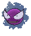
legal (Reg I)Look at the top 7 cards of your deck and put a Darkness Pokémon you find there onto your Bench. You can't use this card during your first turn. Two copies, Phantasmal Flames 090, mark I. Both copies in the sleeve are the player's-choice stamped holos from the last two league nights, and those two prizes are why this card got a look at all.
It benches any stage. The ruling reads "you can place any stage of {D} Pokémon you find directly onto your bench" (Phantasmal Flames FAQ, TPCi Rules Team, 2025-11-13), and Live honors it. Every Pokémon in this list is Darkness, so it hits something about 94% of the time. What it hits is what matters.
The odds, and when to play it, are in Grimsley's Move odds. The six cards it passes over go to the bottom of your deck and stay there until something shuffles.
legal (Reg I)Search your deck for a Basic, a Stage 1, and a Stage 2 Pokémon. Two copies. One card sets up a whole line: Gastly, Haunter, and a Gengar, or Toxel, Toxtricity, and a Gengar.
Its Stage 2 pick is the matchup call, from Which Stage 2 gets the Candy. When Grimsley's is the plan for the Mega, take Gengar ex with Dawn and leave the Mega in the deck.
 legal (Reg I)
legal (Reg I)Search your deck for an Evolution Pokémon and an Energy card. Two copies. It is the Energy-in-hand card for the 26% of hands that open without one, and it reads Evolution Pokémon, which here is nine cards: two Haunter, three Gengar ex, two Mega Gengar ex, and two Toxtricity.
| Board | Hilda takes | Then |
|---|---|---|
| a Gastly benched last turn | Gengar ex or the Mega, and an Energy | Candy, attach |
| a Toxel benched last turn | Toxtricity, and an Energy | the Surge engine a turn early |
| a Gastly and a Toxtricity | Haunter, and an Energy | evolve, attach, Surge the Haunter, and it becomes a loaded Gengar next turn |
Play it before the Candy. Hilda can change which Stage 2 you want.
 legal (Reg I)
legal (Reg I)Search your deck for a Trainer card. Two copies. It makes every one-of behave like a two-of.
Same-turn targets are the Items, the Tool, and the Stadium: Rare Candy, Poke Pad, Switch, Energy Recycler, Hero's Cape, and Risky Ruins. The Supporters it finds wait for next turn: Grimsley's, Boss's Orders, AZ's, and Janine's. It is the only card that finds the Cape, and the fastest way to a Risky Ruins when their Stadium is the problem.
Against Team Rocket decks, their own Team Rocket's Factory lets you draw two off your Petrel. That won a turn in the Toxtricity Box game.
legal (Reg H)Choose up to two of your Darkness Pokémon. For each, search your deck for a Basic Darkness Energy and attach it. If one was your Active Pokémon, it is now Poisoned. One copy, mark H.
It does three jobs in one Supporter. It Poisons a dog again after it left the Active Spot, which is worth 130 damage. It puts the second Energy on an Active Gengar that is one short, which Surge can't do. And it pulls two Energy out of the deck in a drought.
One Energy per Pokémon, never two on one. A judge confirmed it.
legal (Reg I)Switch in 1 of your opponent's Benched Pokémon to the Active Spot. Two copies, up from one.
Chaotic Pain does most of a gust's job for free. The reasons to drag are the ones counters can't cover:
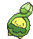
 legal (Reg J)
legal (Reg J)Switch your Active Pokémon with one of your Benched Pokémon. If the one you moved to the Bench is a Pokémon ex, heal 80 damage from it. One copy, Chaos Rising 076, mark J.
Switch when there's a Supporter you want to play this turn, and AZ's when there isn't, or when you need one of the three things only AZ's does:
Three misuses tempt everyone. Never AZ's the attacker unless the next attacker is loaded. Never AZ's a Gengar ex out of a hit that would kill it anyway, since standing flips a coin and pulling doesn't. And never AZ's over Lillie's on a bricked hand; the heal draws no cards.
legal (Reg I)Four copies. Five Stage 2 cards sit over four Gastly, and Candy is the speed route. Two timing rules decide openings: never on your first turn, and never on a Basic that entered play this turn. Search first, then Candy.
 legal (Reg H)
legal (Reg H)Two Basic Pokémon with 70 HP or less, straight to the Bench. Gastly and Toxel are the targets. It is the only Item that benches two on turn 1, and the only way to fill the Bench going first. Two copies, mark H; Poke Pad is its April replacement.
legal (Reg J)Search your deck for a Pokémon without a Rule Box. Two copies, printed Poké Pad, Perfect Order 081, mark J, and reprinted in 30th Celebration.
It finds Gastly, Toxel, Haunter, and Toxtricity, never an ex. On your first turn it takes Gastly, because Gastly is the only card on a clock; later it takes whatever the line is missing. Together with the 11th Basic, it cut the chance of an empty Bench after your first turn from 34% to 22% going first, and from 10% to 6% going second.
legal (Reg I)Switch your Active Pokémon with one of your Benched Pokémon. Two copies. Retreat Costs are paid in Energy, and this board's are 3 and 2; Switch pays in a card instead. It also clears Poison, so spend it on the ghosts, not on a Poisoned dog.
legal (Reg I)Shuffle up to 5 Basic Energy cards from your discard pile into your deck. Two copies.
Every engine searches the deck, so Energy in the discard pile is invisible to all of them. Knock Outs, retreats, and Crushing Hammer all bury it. On Live, one long game emptied the deck by turn 9 and Sinister Surge found nothing until Recycler put five back. Petrel finds one.

 ACE SPEC Rarelegal (Reg H)
ACE SPEC Rarelegal (Reg H)The Pokémon this card is attached to gets +100 HP. The ACE SPEC, Temporal Forces 152, mark H.
Read their biggest number first. The Cape only changes an outcome when their hit lands between your HP and your HP plus 100.
| Wearer | HP | Survives | Still dies to |
|---|---|---|---|
| Gengar ex | 380 | Aura Jab with Premium Power Pro 320, Maximum Drilling 330, Drilling with Kieran 360, Corkscrew Dive with two boosts 320 | Gaia Wave 400, Mega Brave 540, Corkscrew with three boosts 380, Draconic Buster |
| Mega Gengar ex | 450 | everything above, Gaia Wave 400, Drilling with Maximum Belt and Kieran 410, and Corkscrew with three boosts 380 | Mega Brave 540, Draconic Buster |
| Okidogi ex | 350 | Jab with Pro 320, Drilling 330, Corkscrew with two boosts 320 | Drilling with Kieran 360, Gaia Wave 400, Draconic Buster |
It goes on the Gastly you are about to Candy, since Tools are legal on your first turn and the Cape rides the evolution. Against Mega Zygarde it goes on the Mega instead; a Cape'd Gengar ex at 380 still dies to 400. Against Cynthia's Garchomp it goes on the dog in front, since nothing saves a Mega from Draconic Buster. Petrel is the only card that finds it.
legal (Reg I)Two damage counters on every Basic non-Darkness Pokémon either player benches. Every Pokémon here is Darkness, so it is completely one-sided. The 20 stays through evolution, which is what puts Alakazam and Crustle inside one Chaotic Pain.
Two copies, because Stadiums are the other half of its job. A Stadium only leaves play when another replaces it, and a Stadium can't be played over one with the same name.
| Their Stadium | What it does to you | When to replace it |
|---|---|---|
| Battle Cage | stops Chaotic Pain on their Bench | when you need the snipe; Charizard decks replay it, so hold the second copy |
| Forest of Vitality | Weedle to Beedrill ex in one turn | whenever you can; it is a tax, not a lock, since they run four |
| Spikemuth Gym | searches their Marnie's Pokémon every turn | the turn after they build |
| Ange Floette | Mega Floette ex at 400 | before you swing at it; it drops back to 250 |
| Gravity Mountain | every Stage 2 in play gets 30 less HP | the turn before their big hit, not the turn it lands |
| Jamming Tower | your Cape stops working | the turn the Cape needs to work |
| Full Metal Lab | your dogs and Void Gale do 30 less to Metal Pokémon; counters ignore it | the turn a hit needs the 30 |
| N's Castle, Prism Tower, Team Rocket's Factory | free retreats and extra draws | when nothing above is in play |
legalTen, and the count is deliberately lower than it looks. Poisonous Musculature, Sinister Surge, and Janine's all search the deck, so the only Energy that needs to be in your hand is the one manual attachment per turn. Two Energy Recycler and two Switch keep ten honest. Any Basic Darkness print works, holos included.

Shadowy Concealment decides how you build your Bench, so the arithmetic is worth doing.
Every Pokémon ex you bench is a hole in the tax. Keep one Mega on the board, at most two other ex, and zero-Prize bodies everywhere else.
That is about one Prize of expected value per death, in your favor. On Live the coin took a Mega Zygarde, a Mega Floette, and a Dhelmise. Retreating throws away both halves and costs Energy on top.

Six sources put Energy where it matters, and only the manual attachment spends a card from your hand.
| Source | From | To | Costs |
|---|---|---|---|
| Manual attachment | hand | anywhere | your attachment for the turn |
| Poisonous Musculature | deck, two | the Active dog | its attack; Poisons it |
| Sinister Surge | deck | a Benched Darkness Pokémon, once per Toxtricity | two damage counters |
| Janine's Secret Art | deck, one each | up to two Darkness Pokémon | your Supporter; Poisons your Active if it took one |
| Void Gale | the Mega | a Benched Pokémon | nothing extra; it rides the attack |
| Hilda | deck | your hand | your Supporter |
Chaotic Pain and Void Gale cost two, which the engine reaches in one turn. Chain-Crazed costs three, which Musculature delivers on its own a turn ahead.
Four things drain the pool. Knock Outs bury whatever the Pokémon held. Retreat Costs bury 3 from a dog and 2 from a Gengar or Toxtricity. Crushing Hammer buries one on every heads, and Toxtricity Box runs four. Musculature pulls two out of the deck at a time. Switch and AZ's keep the retreat bill off the pool, and Energy Recycler puts the rest back where the engines look.
Against Crushing Hammer, bank a spare. A dog with four Energy still swings after one heads; a dog with three doesn't.
You can attack on your first turn going second, and the deck has two openers.
With a dog and an Energy, which 22% of hands hold, attach, use Poisonous Musculature, and take both. The dog ends the turn holding three and Poisoned, and turn 2 is Chain-Crazed for 260.
With a Toxel instead, attach and Call for Family. Take two Gastly when a dog is already in play, or a dog and a Gastly when it isn't.
Either way, bench a Gastly, because turn 1's Gastly is turn 2's Gengar. Play Lillie's while it still draws eight, unless the hand already holds its line. Grimsley's can't be played yet.
You can't attack, play a Supporter, or use Grimsley's, and every Item is still legal. Poffin and Poke Pad take Gastly first. If their first Basic says the room is Fighting or Metal, the Cape goes on the Gastly you plan to Candy. A Hilda or a Dawn in the opening hand is turn 2's play, and it goes down before the Candy does.
Your attacker dies. The question is whether the next one is ready.
If one is, promote it. A Haunter that Surge fed evolves into a Gengar ex already holding Energy. A benched dog with Energy on it comes up swinging.
If a Gengar ex is Active and one Energy short, the out is Janine's. Surge can't reach the Active Spot, and Janine's puts one Energy on your Active and one on the Bench. Play it before you pass with a loaded Gengar doing nothing.
If nothing is ready, send out a dog. It needs no line and no Candy. One Energy and Musculature give it three and a Poison, and 250 HP buys the turn the ghosts need.
Use Switch or AZ's, not Retreat. Rotating by retreat discards Energy equal to the Retreat Cost, and this board's costs are 2 and 3.
Against Pokémon ex attackers, the Mega is due before your first Pokémon takes a real hit. There are three routes, fastest first.
Keep one Mega in the deck while Grimsley's is your route. A Mega in your hand needs a Gastly and a Candy. The Zygarde loss had both Megas in hand by turn 3 and no Gastly to put them on.
The exceptions are in Which Stage 2 gets the Candy. Never build it against single-Prize attackers, build Gengar ex first against Munkidori, and build the Cape'd Gengar ex first against Mega Lucario.
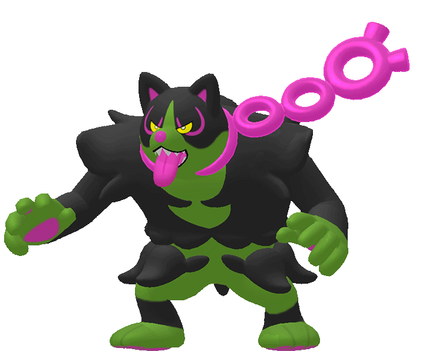
They drag a Gastly into your Active Spot. The dog is on the Bench with its Energy and without its Poison, and it costs three Energy to retreat.
Often, do nothing. The Gastly dies for zero Prizes under Concealment, and you promote the dog next turn having lost only the Poison.
When you can't wait, use Switch or AZ's, never Retreat. Then Janine's restores the Poison, and Chain-Crazed is 260 again.
When the dog itself is doomed, swing with it. A dog that retreats to the Bench still dies there to Cruel Arrow, Phantom Dive, or Munkidori, and it paid three Energy for nothing. The Toxtricity Box game retreated a Poisoned dog holding four Energy instead of hitting their 120 HP Scrafty for 260, and the dog died on the Bench a turn later.

Two Risky Ruins, and Petrel works like a third, so the question is usually when, not which. Risky Ruins has the table of what to replace.

Keep the board's payout at four or less against ex attackers.
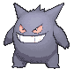
The Cape is one card and one use, so the question every game is which body and which turn.
Read their biggest number first. Under 280, hold it; the Gengar survives on its own. Between 280 and 379, it goes on the first Gengar through the Gastly, because Jab with Pro at 320, Drilling at 330, and Drilling with Kieran at 360 all fall in that band. From 380 up, a Gengar dies either way, so the Cape goes on the Mega at 450 or stays in the deck. Mega Zygarde's 400 is the case that decides it.
Then pull it, don't spend it. A Cape'd Gengar at 60 after a Jab is one AZ's returns to the Bench at 140, with the Cape still on.
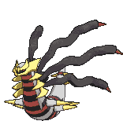

The Live ladder is where this deck practices, and league is where it plays. Shares below come from Limitless Play online tournaments since 30th Celebration went legal, pulled 2026-09-25. Gengar ex decks there sit at 0.65% of the field with a 38% win rate, and they do worst against Alakazam (18%), Crustle (14%), Mega Excadrill (17%), and Dragapult (about 30%). The samples are small, and none of those lists run the dogs.
Three kinds of room decide the build.
| Room | Examples | Build | Your edge |
|---|---|---|---|
| Pokémon ex attackers | Dragapult, Lucario, Zygarde, Garchomp, Excadrill, N's Zoroark, Starmie, Floette, Cinccino, Charizard | Mega first, then Gengar ex | Concealment and Fainting Spell both work |
| Single-Prize attackers | Dhelmise, Alakazam, Slowking, Crustle | Gengar ex and the dogs, no Mega | the Psychic ones are weak to Darkness, and the dogs one-shot them |
| Counter movers | Munkidori in Dragapult, Grimmsnarl, Sharpedo, and Toxtricity Box; Alakazam; Spiritual End | Gengar ex first | Chaotic Pain on the movers |
| Deck | Share | Section |
|---|---|---|
| Dragapult ex, every build | ~19%, and Steve most weeks at league | Versus Dragapult ex |
| Alakazam, both builds | ~7.5% | Versus Alakazam |
| N's Zoroark ex | 6.1% | Versus N's Zoroark ex |
| Slowking | 6.1% | The rest of the room |
| Basic Box | 4.8% | The rest of the room |
| Mega Excadrill ex | 4.5%, and Matt every week at league | Versus Mega Excadrill ex |
| Cynthia's Garchomp ex | Elliot, every week at league | Versus Cynthia's Garchomp ex |
| Mega Lucario ex, both builds | 3.9% | Versus Mega Lucario ex |
| Dhelmise | 3.9% | Versus Dhelmise |
| Crustle | 3.1%, and common at league | Versus Crustle |
| Sharpedo Toxtricity | 2.0%, and Steve at league | Versus Mega Sharpedo ex |
| Mega Starmie ex, three builds | 1.6% | Versus Mega Starmie ex |
| Marnie's Grimmsnarl ex | 1.5% | Versus Marnie's Grimmsnarl ex |
| Beedrill ex | 0.8% | Versus Beedrill ex |
| Toxtricity Box | 0.6% | Versus Toxtricity Box |
| Cinccino ex | 0.2%, and seen at league | Versus Cinccino ex |
| Mega Zygarde ex, Mega Floette ex, Charizard | on the Live ladder | Zygarde, Floette, Charizard |
Steve plays this most weeks at CardCrate, and dragons.md is modeled on his list.
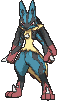

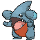
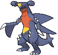
This is Elliot's deck, the one he brings to Wednesday league every week. The little dino Basic is Cynthia's Gible, not Tyrunt. It is the hardest room this deck plays. Every Pokémon you run is weak to Fighting, their attack costs one Energy and refills their hand while it hits, and nothing you have one-shots a Garchomp. In the Live loss on September 25, Garchomp came down through Rare Candy on their second turn, and the deck dealt no damage in five turns. Your Prizes come from two Garchomps and two singles, usually Roserades.
Where Corkscrew Dive lands. Roserade and Premium Power Pro each add 30 before Weakness, so each one is 60 more on you.
| Boosts | Damage | Still standing |
|---|---|---|
| None | 200 | Okidogi, Gengar ex, Mega Gengar |
| One | 260 | Gengar ex, Mega Gengar, a Cape'd Okidogi |
| Two | 320 | Mega Gengar, a Cape'd Gengar ex or Okidogi |
| Three | 380 | only a Cape'd Mega Gengar |


This is Matt's deck, the one he plays at Wednesday league every week, and it is the older build: Metang's Metal Maker is the Energy engine and Genesect ex is the search. Fox's copy of it is metal-excadrill.md. It feels fast because Trolley and Metallic Signal put two or three Metang up by his second turn, so Drilling can hit 200 that turn and 330 the next. Online you mostly meet the newer Steven's build instead, and online lists add Kieran (360) or Maximum Belt (380). Matt's copy runs neither, so his ceiling is 330.

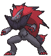
Target order, from the Live win:
A turn-2 Mega won that game. Concealment held them to 5 Prizes. Special Red Card comes out the moment you're down to 3 Prizes, so spend your hand before then.

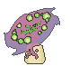
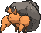
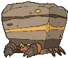
Crustle is one of the most common decks at CardCrate. Online, nearly every list pairs three Crustle with four Mega Kangaskhan ex. The rest is Mist Energy, Spiky Energy, Jumbo Ice Cream to heal, and Eri and Xerosic's Machinations to pick apart your hand.
 , so an attacking Crustle usually holds a Mist Energy, and then Chaotic Pain can't touch it. Dwebble and a Crustle still waiting on Energy are the targets. Read the Energy before you pick.
, so an attacking Crustle usually holds a Mist Energy, and then Chaotic Pain can't touch it. Dwebble and a Crustle still waiting on Energy are the targets. Read the Energy before you pick.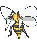

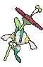
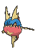
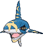
Steve played this at CardCrate last week. He usually plays Dragapult, and he plays fast. Online it is called Sharpedo Toxtricity, and 26 of 28 online lists aim Toxel and Toxtricity's Sinister Surge at their own Sharpedo, because Hungry Jaws needs just one damage counter to jump from 120 to 270. Steve's support line was a different Darkness evolution line, from an older set, and it is still unidentified. Whatever it is, the job is the same: put counters or Energy on the Sharpedo. Lists also run Judge and Unfair Stamp, so bench what you draw.
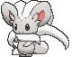
This one shows up at CardCrate. Last week a Cinccino ex won a game at the shop with 15 Energy on it and no other Pokémon in play, which is 600 damage. Online lists feed it with the same Metang engine Matt's Excadrill uses, plus Genesect ex and Metagross.
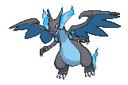
| Deck | The problem | The answer |
|---|---|---|
| Slowking, 6% | Seek Inspiration copies a non-Rule-Box attack off the top of their deck; single-Prize | 120 HP, so one Chaotic Pain; no Mega |
| Basic Box, 5% | Benches full of Pokémon ex under Area Zero, and no cradles to shoot | the tax room. Mega first, and Ruins taxes every Basic. |
| Jellicent ex | Oceanic Curse locks your Items and Tools while it is Active | Grimsley's, Janine's, AZ's, Boss's Orders, and Surge all still work; it is Psychic and weak to Darkness, so a dog one-shots it |
| Festival Grounds | Pokémon with Energy can't be Poisoned, so Chain-Crazed stays at 130 | Risky Ruins; neither Gengar attack needs Poison |
The list is a hypothesis, and games are the data.


Two days of Live testing produced more good cards than seats, and a few the games rejected.
| Card | Swaps for | Play it when |
|---|---|---|
| Janine's Secret Art, the 2nd | the 2nd Boss's Orders | the first attack keeps arriving late; see Test and Tune |
| Night Stretcher | a Poke Pad | you need a Pokémon back more than a turn-1 Basic. Swapped out on September 24, and it may still get a reprint before April. |
| Energy Switch | a Switch | Surge Energy keeps getting stranded on the Bench. It left when Janine's took over topping up the Active. |
| Unfair Stamp | Hero's Cape | Alakazam is the room. Every ACE SPEC rotates in April anyway. |
| Gengar ex (Temporal Forces 104) | a Dawn | you want a 4th Gengar ex in paper. Gnawing Curse puts 2 counters on anything they attach to from hand, and it shares the four-copy cap. |
| Gengar (Perfect Order 050) | a Toxel | the ladder turns single-Prize. Mind Jack is 10, plus 30 for each of their Benched Pokémon, for one Energy, from a body that returns to your hand when it dies. |
| Purrloin (White Flare 055) | a Toxel | never again. Invite Evil searches three Darkness Pokémon for one Energy, but it has to be Active to attack, and on Live two uses cost two attachments and a switch. |
| N's Plan | never here | tested in the zero-Haunter build. It moves two Energy from the Bench to the Active, and this list rarely has spare Energy on the Bench. |
| Mega Darkrai ex | never | tested and rejected. A Basic Mega with Dusk Raid at 220, but its Grass Weakness made it a one-hit, 3-Prize gift to Beedrill, and it only carried against Fighting. |
| Dark Bell | never | tested for Mega Darkrai's Abyss Eye. It went unplayed for seven games and is blank against Darkness Actives. |
| Crobat (Shrouded Fable 029) and Zubat | never | Janine's with Crobat in play draws to eight, but the simulator had that firing by turn 5 in only 12% of games. |
| Dudunsparce and Dunsparce | never | the field's favorite draw engine. In this list the simulator found no gain for four slots. |
| Budew | never | a free turn-1 Item lock, but your own Ruins hits it, and it competes with Musculature and Call for Family for the turn-1 attack |
| Grand Tree | never | a free evolution every turn for both players, which Dragapult and Alakazam want more than you do; it also fights your Ruins and costs the Cape |
| Academy at Night | never | it guarantees Grimsley's by putting a card from your hand on top of the deck, but your opponent gets it too, and it takes the Stadium slot |
| Pokégear 3.0 | a Dawn | you want Grimsley's more often. A Supporter is in the top seven more than 90% of the time, but a specific two-of only 29%. |
| Buddy-Buddy Poffin, the 3rd | a Hilda | lone-Basic openings go on costing games |
| Secret Box | Hero's Cape | never. Discarding three fights a deck that plans turns ahead. |
| Shadowy Darkness Energy | never | it protects a Benched Darkness Pokémon from attack damage, but it is Special Energy, and nothing in this deck finds or recovers it |
| Waitress | Janine's | never. It looks at six cards for one Energy and can miss. |
| Punk Helmet | never here | tested in the zero-Haunter build and never mattered |
| Sacred Ash | an Energy Recycler | the Pokémon side of the discard runs dry. It never has. |
| Prime Catcher | Hero's Cape | you would rather have a third gust than a bigger Gengar |
| Cyrano | a Hilda | you want three Pokémon ex from one card; mark H |
| Energy Retrieval | a Switch | the Recyclers stop keeping up |
| Energy Search | never | an 11th Energy that no engine can see |
| Ultra Ball | a Dawn | most lists run it. This one doesn't, because the discard cost fights a hand planned two turns ahead. |
| Scramble Switch | Hero's Cape | tried and cut; losing the gust slot cost a game |
| Jamming Tower | a Risky Ruins | Air Balloon keeps resetting Mega Brave. It turns your Cape off too. |
| Binding Mochi | Hero's Cape | the dogs become the main attackers. +40 on a Poisoned dog is 300. |
| Air Balloon | never | tried and cut; it died on the Gastly wearing it |
| Battle Cage | a Risky Ruins | Dragapult's counters are killing your Bench. It turns off your own snipe too. |
| Eternatus (Phantasmal Flames 069) | a Toxel | Stadium wars keep losing you games; Shatter discards a Stadium |
| Tremendous Bomb | Hero's Cape | the room is all Mega ex. It puts 12 counters on any Mega that hits the wearer for 240 or more. |
| Gwynn | never | tried and cut. It discards Pokémon without a Rule Box, which are the ones you bench on sight. |
| Kofu | a Poffin | draw has to be always live |
| Fezandipiti ex, Pecharunt ex, Munkidori, Chi-Yu | never | tried or rejected in earlier passes; they broke the rhythm |
| Marnie's Grimmsnarl ex | never | Punk Up feeds only Marnie's Pokémon |

This is a paper list, and every card is in hand as of September 25. Own counts come from the collection database, which undercounts the binder, so the pull list will ask for some of these until the database catches up. The Rare Candy, Lillie's, Switch, Boss's Orders, Hilda, and Poffin rows are shared with the other sleeved decks.
| Card | Own | Need | Buy | Note |
|---|---|---|---|---|
| 0 | 3 | 3 | the shield; NOT the 082 or 090 illustration prints |
| 4 | 4 | ✓ | 70 HP; the Temporal Forces print is 60 and mark H |
| 2 | 2 | ✓ | the no-Candy route and the safe step |
| Gengar ex ME: 30th Celebration 090/128 | 0 | 3 | 3 | Chaotic Pain; 13 counters on any target |
| 3 | 2 | ✓ | Shadowy Concealment; one on the board, never two |
| 2 | 4 | 2 | Call for Family, and the 11th Basic |
| 2 | 2 | ✓ | Sinister Surge, once per copy; 103 is the same card |
| 11 | 3 | ✓ | shared; play it before your first Prize for eight |
| 1 | 2 | 1 | benches any stage; the two stamped league promos |
| 4 | 2 | ✓ | a whole line in one search |
| 7 | 2 | ✓ | shared; an Evolution and the Energy to run it |
| 1 | 2 | 1 | any Trainer, and the only card that finds the Cape |
| 2 | 1 | ✓ | re-Poisons a dog; tops up an Active Gengar |
| 10 | 2 | ✓ | shared; printed Boss's Orders [Ghetsis] |
| 0 | 1 | 1 | the dog's exit; heals 80 on the ex it benches |
| 10 | 4 | ✓ | shared |
| 9 | 2 | ✓ | shared; Gastly and Toxel to the Bench |
| 4 | 2 | ✓ | printed Poké Pad; the database drops the accent |
| 7 | 2 | ✓ | shared; rotation that costs a card instead of Energy |
| 0 | 2 | 2 | the fuel line; 5 Basic Energy back into the deck |
| 0 | 1 | 1 | ACE SPEC; +100 HP |
| 4 | 2 | ✓ | one-sided; every Pokemon here is Darkness |
| Basic Darkness Energy MEE: Mega Evolution Energies 7 | 38 | 10 | ✓ | never rotates |
| Total to buy | 14 |